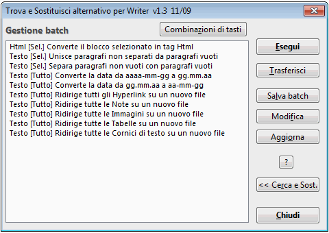
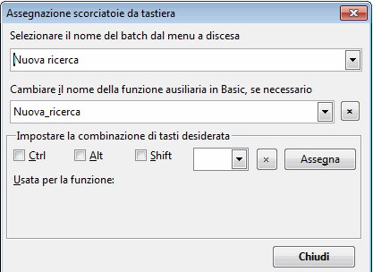

(Finestra di dialogo alternativa per la voce Cerca e Sostituisci di Writer)
Versione 1.3.1
| Che cosa offre questa estensione | Ricerca | Sostituzione | Modalità Batch | Limitazioni | Storia delle modifiche |
Autore: Tomas
Bilek – © 2007-2010
Licenza: LGPL, vedi
http://www.volny.cz/macrojtb/0gnu-lgpl_en.html
Questa versione della guida è stata tradotta in italiano da Leopoldo Saggin - © 2009-2010
Questa macro viene distribuita nella speranza che possa essere utile, ma SENZA ALCUN TIPO DI GARANZIA
Selezione rapida di espressioni regolari predefinite e complesse
Conteggio del numero di occorrenze delle espressioni trovate usando il pulsante [ Conta ]
Ricerca e/o sostituzione di stringhe contenute in uno o più paragrafi
Ricerca e/o sostituzione di stringhe contenenti caratteri decimali o esadecimali
Ricerca di interruzioni manuali di pagina o di colonna, loro eventuale inserimento o eliminazione
Ricerca di un blocco di paragrafi delimitato da due marcatori di testo
Una volta trovata una stringa di testo, possibilità di espandere o di ridurre la selezione di uno specifico numero di caratteri
Possibilità di effettuare ricerche e/o sostituzioni multiple in un colpo solo
Possibilità di condurre ricerche nelle Note, nei Campi di Testo, nei Riferimenti Incrociati e negli Indicatori di Riferimento incrociato sia per contenuto, sia per nome, sia per bersaglio dell’azione degli indicatori; possibilità anche di un loro inserimento
Possibilità di effettuare ricerche in Tabelle, Immagini e Cornici di testo in base al loro nome; possibilità di effettuare sostituzioni con qualsiasi testo, contenuto del testo, nome dell’oggetto o contenuto degli Appunti (Clipboard)
Ricerche e inserimento di Note a piè di pagina e di Note di chiusura (richiede OOo 2.3 o superiori). Possibilità di selezionare il testo di tutte le Note a piè di pagina o di tutte le Note di chiusura contemporaneamente, assegnandogli uno stile qualsiasi
Possibilità di cercare un testo che abbia formattazione simile o uguale a quella del del testo su cui è posizionato il cursore
Possibilità di sostituzione individuale di sotto-espressioni (fino ad un massimo di 9) all’interno della stringa di ricerca mediante loro inserimento all’interno di parentesi () e, riferendosi ad esse, nell’ambito delle stringhe di sostituzione, mediante l’uso dei parametri \1, \2 ...fino a \9 (nell’ordine)
Possibilità di definire lo stile del paragrafo, dei caratteri e degli elenchi in cui cercare e/o sostituire testo; sue proprietà e URL di collegamento ipertestuale (hyperlink)
Possibilità di sostituire il testo trovato con il contenuto degli Appunti (Clipboard), con un contatore del numero di sostituzioni o con il numero della pagina in cui è avvenuto il ritrovamento
Possibilità di ridirigere i risultati della sostituzione su un altro file di testo
Modalità Batch: possibilità di salvare su file e di caricare da questo i parametri di ricerca e di sostituzione; possibilità di salvare parecchie operazioni di ricerca e di sostituzione in sequenza e di eseguire rapidamente, in un tempo successivo e con un unico comando, l’intero gruppo di operazioni
[v1.2] Possibilità di assegnare delle scorciatoie da tastiera alle operazioni batch salvate usando direttamente la finestra di dialogo di AltSearch
[v1.3] Mantenimento maiuscole: se il testo trovato comincia con una lettera maiuscola, anche il testo sostituito inizierà con una lettera maiuscola
[v1.3] Ricerca per stile di caratteri; possibilità di scegliere uno stile dal menu
[v1.3.1] Ricerca per stile di paragrafo o di elenco tramite la casella di riepilogo ‘Proprietà’
Se si usa frequentemente AltSearch, ecco un suggerimento per configurare le scorciatoie da tastiera:
1. Aprire la voce di menu Strumenti - Personalizza... - Tastiera
2. Nel campo Area, selezionare OpenOffice.org Macros - User (o Share) - AltSearch - AltSearch
3. Nel campo Funzione, conviene selezionare
e assegnare le seguenti scorciatoie usando il pulsante
Cambia:
_AltSearch: Ctrl+H (per aprire la finestra di
ricerca AltSearch);
_FindNext: Ctrl+L (per cercare l’occorrenza
successiva della stringa cercata dopo il punto in cui è
posizionato il cursore senza aprire la finestra di dialogo di
AltSearch);
_FindBack: Ctrl+Shift+L (per cercare l’occorrenza
della stringa cercata prima del punto in cui è posizionato il
cursore senza aprire la finestra di dialogo di AltSearch)
[v1.2] A partire dalla versione 1.2 si possono anche assegnare le scorciatoie direttamente dalla finestra di dialogo di AltSearch - vedi Modalità Batch
Contengono le espressioni regolari complesse o frequentemente usate e altri parametri di ricerca che possono essere inseriti nella casella di digitazione dei criteri di ricerca. Dopo avere effettuato la scelta di una delle opzioni presenti nella casella di riepilogo, il relativo parametro viene trasferito nella casella di digitazione del parametro/stringa da ricercare e, qualora si specifichi anche questo criterio, anche nella casella di digitazione del parametro/stringa con cui effettuare la sostituzione. Le procedure di ricerca/sostituzione possono essere eseguite anche specificando ulteriori opzioni: prima o dopo il luogo in cui è posizionato il cursore e con sostituzione o meno dell’espressione cercata. In ogni caso va contrassegnata la casella di controllo "Espressioni regolari"
Casella di riepilogo ’Regolari'
Questa casella di riepilogo contiene alcune espressioni regolari molto utili che sono descritte nella Guida di OOo nell’ambito del capitolo intitolato Elenco di Espressioni Regolari
Limitazioni: La sintassi usata nelle
espressioni regolari non è totalmente compatibile con quella
originale di OOo. Ci sono dei problemi specialmente nelle ricerche
che usano i caratteri jolly *, +, ? o {n,n}
se questi sono usati subito dopo le sotto-espressioni create
utilizzando le parentesi ()
Per esempio non è possibile
trovare (Mi)?ster - questa ricerca funziona
solo se usata in modo compatibile (v. sotto). In ogni caso però,
se si usa [ Conta ], viene restituito il
conteggio reale delle occorrenze. È inoltre possibile cercare
delle sotto-espressioni del tipo (.*)any o
(.+)any, ma viene trovata l’occorrenza
più corta corrispondente al criterio, contrariamente al
sistema di ricerca standard di OOo che invece trova l’occorrenza
più lunga corrispondente al criterio. Se è
necessario conservare la compatibilità con OOo, si può
delimitare l’intera espressione di ricerca con un ulteriore
paio di parentesi: ((Mi)?ster).
L’inconveniente di questa modalità è che non è
possibile citare la sotto-espressione nell’ambito della
espressione di sostituzione; non è cioè possibile usare
\# dove # è il numero di riferimento
(max. 9) della sotto-espressione. Tanto meno si possono usare tali
riferimenti alle sotto-espressioni nel caso si stiano eseguendo delle
operazioni di ricerca e di sostituzione con uso di una espressione
regolare. Vedi sotto-espressioni
Altri parametri speciali dei caratteri jolly:
\l - rappresenta qualsiasi carattere alfabetico; equivale cioè a[:alpha:]{1,1}
\d - rappresenta una cifra decimale; equivale a [0-9]
\p - rappresenta il segno di fine paragrafo
Contrariamente alla ricerca standard di OOo, il carattere $ rappresenta anche un paragrafo vuoto. Con $ è possibile usare anche caratteri jolly quali +, *, o {min,max}
\p{1,} - trova la fine del paragrafo successivo seguita da un numero illimitato di paragrafi vuoti. Equivale quindi a \p*
\p{2,4} - trova la fine del paragrafo successivo seguita da almeno uno e da un massimo di tre paragrafi vuoti, per un totale di 2-4 paragrafi, uno dopo l’altro
Limitazioni: La procedura è lenta. Possono sorgere dei problemi nel caso di in una ricerca a ritroso
\xhhhh - abilita la ricerca di caratteri in codifica esadecimale (hhhh)
\#ddddd - abilita la ricerca di caratteri in codifica di numero decimale (ddddd)
Se il carattere successivo non è una cifra, non è necessario conservare tutte 5 le posizioni (ddddd); in caso contrario è necessario riempire le posizioni vuote con degli zero, a partire da sinistra
\c - rappresenta una interruzione manuale di colonna
Limitazioni: La procedura è lenta
\m - rappresenta una interruzione manuale di pagina
Limitazioni: La procedura è lenta. Se si usa anche la sotto-espressione (), il parametro \m deve trovarsi all’inizio della stringa di ricerca e non deve essere da solo. È cioè valida l’espressione \m(...) ma non (...)\m
\s - rappresenta qualsiasi spazio: normale, non divisibile, determinato da un carattere di tabulazione o da una interruzione manuale di riga
È equivalente a [\xA0\x9\xA]
\S - rappresenta uno spazio non divisibile (\x00A0 or \#160)
Casella di riepilogo ’Estesa'
[::BigBlock::] - cerca un blocco di paragrafi (di lunghezza illimitata) delimitato da qualche testo noto
start[::BigBlock::]end – in questo caso viene cercata dapprima la stringa start e quando viene trovata, viene cercata la stringa end. Se vengono trovate entrambe, viene selezionato l’intero blocco di testo compreso fra di loro
Nella stringa di sostituzione si possono usare i parametri \b, & o \e per inserire il contenuto di start, found block of paragraphs e end, rispettivamente
Limitazioni: Nella stringa iniziale e finale non è possibile usare i segni || per ricerche e sostituzioni multiple (v. sotto)
[::Grow n1,n2::] - il blocco di testo trovato viene espanso di n1 caratteri a sinistra e di n2 caratteri a destra
[::Grow -1,-1::]text - in questo caso, se nel blocco di testo esiste la stringa text, essa verrà trovata, ma saranno selezionati solo i caratteri ex
Limitazioni: è sempre necessario porre [::Grow... all’inizio della stringa di ricerca: l’espressione da cercare va posizionata dopo. Se n1 o n2 sono valori negativi, la successiva ricerca può determinare l’insorgenza di un circolo vizioso perché viene trovata sempre la stessa occorrenza della stringa in funzione delle dimensioni e del contenuto dell’espressione cercata
text1||text2||text3||… - operazione di ricerca e sostituzione multipla in un unico colpo
L’aggiunta del segno || alla fine delle espressioni da cercare e sostituire serve a delimitare le ricerche e le sostituzioni parziali
Cerca per:
text1||text2||text3
Sostituisci con:
neco1||neco2||neco3
In questo caso viene
cercata la stringa text1 e viene sostituita
da neco1. Poi la ricerca continua per la
stringa text2 che viene sostituita da neco2,
ecc...
Limitazioni: con || non si possono usare né il parametro [::BigBlock::] né le sotto-espressioni
Ricerca di Oggetti:
[::Note::] - cerca le Note di Testo (fumetti gialli) a seconda del loro contenuto
[::Note::] - trova la nota di testo successiva
[::Note::]pozn. - trova qualsiasi nota di testo contenente la sotto-stringa pozn.
Limitazioni: nel contenuto delle note si possono cercare solo sotto-stringhe. Non è invece possibile usare le espressioni regolari standard
[::Field::] - cerca i Campi di Testo a seconda del loro contenuto
[::Field::] - trova qualsiasi campo di testo normale
[::Field::]obsah - trova quei campi di testo del documento che hanno il testo obsah
Limitazioni:
le stesse di [::Note::]. (v. sopra)
Inoltre
qualsiasi campo di tipo speciale (per esempio un campo nascosto) non
viene trovato
[::TextFrame::] - cerca le Cornici di Testo a seconda del loro nome
[::TextFrame::] - trova qualsiasi cornice di testo
[::TextFrame::]rám1 - trova quelle cornici di testo che contengono nel loro nome la sotto-stringa rám1
Limitazioni:
1. Utilizzando il
pulsante [ Trova ], viene
trovata la successiva cornice di testo solo se essa è
selezionata o se il cursore è all’interno della cornice
stessa. Se il cursore non si trova all’interno
di una cornice, viene trovata quella che è la prima cornice
secondo l’elenco interno delle cornici del documento.
N.B.:
La casella di controllo "Solo nella selezione corrente"
attualmente non funziona
2. Come conseguenza del punto precedente, l’utilità pratica del pulsante [ Sostituisci ] è molto limitata
3. L’ordine di ricerca sfortunatamente corrisponde (si spera provvisoriamente) all’ordine con cui le cornici di testo sono state inserite nel documento. Non viene cioè rispettato l’ordine progressivo delle pagine del documento (dall’inizio alla fine) in cui le cornici sono inserite
4. Nel nome della cornice si possono ricercare solo sotto-stringhe; non è possibile cercare espressioni regolari complete
I pulsanti [ Trova tutto ] e [ Sostituisci tutto ] sono pienamente operativi, anche se usati in associazione alla casella di controllo "Solo nella selezione corrente"
[::Picture::] - cerca le Immagini a seconda del loro nome
[::Picture::] - trova qualsiasi immagine
[::Picture::]obr1 - trova le immagini che contengono nel loro nome la sotto-stringa obr1
Limitazioni: le stesse presenti nel caso di [::TextFrame::] (v. sopra)
[::TextTable::] - - ricerca le Tabelle a seconda del nome
[::TextTable::] - trova qualsiasi tabella
[::TextTable::]tab1 - trova le tabelle che contengono nel loro nome la sotto-stringa tab1
Limitazioni: le stesse di [::TextFrame::] (v. sopra)
[::Footnote::] - cerca le Note a Piè di Pagina (NPP)
[::Footnote::] trova il richiamo corrispondente (ancoraggio) di qualsiasi NPP
[::Footnote::]5 trova il il richiamo corrispondente (ancoraggio) di quelle NPP in cui il richiamo corrispondente (ancoraggio) contiene la sotto-stringa 5
[::Footnote::]\\text trova le NPP il cui testo contiene la sotto-stringa text. Cliccando sul pulsante [ Trova tutto ] verrà selezionato il testo di tutte le NPP che contengono la sotto-stringa text
Usando [::Footnote::]\\ e cliccando sul pulsante [ Trova tutto ], verrà selezionato il testo di tutte le NPP: è un sistema comodo per assegnare uno stile di paragrafo a tutte le NPP in colpo solo
Limitazioni: Funziona solo con la versione 2.3 e superiori di OOo
[::Endnote::] - cerca le Note di chiusura
L’uso dei parametri e le limitazioni sono le medesime di [::Footnote::] (v. sopra)
[::ReferenceMark::] - cerca gli Indicatori di Riferimento Incrociato (IRI) (marker of cross-references)
[::ReferenceMark::] trova qualsiasi testo configurato come IRI
[::ReferenceMark::]text trova qualsiasi testo configurato come IRI contenente la sotto-stringa text
[::ReferenceMark::]\\ref1 trova qualsiasi testo configurato come IRI il cui nome contenga la sotto-stringa ref1
[::ReferenceMark::]\\\\ trova qualsiasi testo configurato come IRI il cui testo sia vuoto
[::Reference::] - cerca all’interno dei campi di testo definiti come Riferimenti Incrociati (cross-reference) per mezzo degli indicatori (markers)
[::Reference::] trova tutti i campi di testo di tipo riferimento incrociato
[::Reference::]above trova tutti i riferimenti incrociati che contengono la sotto-stringa above
[::Reference::]\\ref1 trova tutti i riferimenti incrociati il cui nome contiene la sotto-stringa ref1
[::Reference::]\\\\ trova tutti i riferimenti incrociati il cui testo è vuoto
Se Reference viene scelto a partire dalla casella di riepilogo Estesa e contemporaneamente il cursore è posizionato nell’ambito di un testo che è un IRI, il corrispondente nome di origine del riferimento incrociato viene aggiunto automaticamente alla casella di digitazione Cerca per ed è quindi possibile effettuare delle ricerche predefinite di tipo più mirato
Casella di riepilogo ’Proprietà'
Abilita
le ricerche a seconda delle proprietà (attributi) e dei loro
valori
Nella casella di digitazione bisogna dapprima introdurre la
stringa [::: seguita
dal nome
della proprietà. Se si hanno più nomi di proprietà,
li si possono separare con il segno |.
Alla fine bisogna inserire la stringa ::].
Dopo di che si possono immettere le specifiche dell’eventuale
testo da cercare. Se invece si cerca il valore della proprietà,
bisogna usare una sintassi del tipo: name=value
[:::ParaStyleName::] - ricerca lo stile di un paragrafo [v1.3.1]
[:::ParaStyleName=::] trova tutti i paragrafi aventi stile di paragrafo diverso dallo stile Default.
[:::ParaStyleName=Example::] trova tutti i paragrafi aventi lo stile di paragrafo Example.
[:::ParaStyleName=Example::] something - trova il testo something se esso è formattato con lo stile di paragrafo Example.
Limitazioni:
Non è possibile cercare del testo avente lunghezza zero
caratteri; per esempio un paragrafo vuoto.
Non si può
combinare questo tipo di ricerca con altre proprietà del
testo.
[:::CharStyleName::] - ricerca lo stile dei caratteri [v1.3]
[:::CharStyleName=::] - trova quelle parti di testo che hanno uno stile dei caratteri diverso dallo stile Default
[:::CharStyleName=Example::] - trova qelle parti di testo che hanno lo stile dei caratteri Example
[:::CharStyleName=Example::] something - trova il testo something se questo è formattato con lo stile dei caratteri Example
Limitazioni:
Funziona solo dalla posizione del cursore in avanti - L’opzione
Indietro non funziona e dà il messaggio: Non
trovato.
Non è
possibile cercare del testo avente lunghezza zero caratteri; per
esempio un paragrafo vuoto.
Non si può combinare questo
tipo di ricerca con altre proprietà del testo [v1.3.1].
[:::NumberingStyleName::] - ricerca lo stile di un elenco - L’uso è simile a quello della ricerca dello stile di paragrafo, vedi sopra. [v1.3.1]
[:::HyperLinkURL::] - cerca un testo avente l’attributo (proprietà) di tipo HyperLinkURL
[:::HyperLinkURL::] - trova tutti i testi presenti nel documento aventi proprietà di tipo collegamento ipertestuale (hyperlink)
[:::HyperLinkURL::]link - trova la parte del collegamento ipertestuale (hyperlink) contenente il testo link
[:::HyperLinkURL=file:///c:/pokus.odt::] - trova un collegamento ipertestuale (hyperlink) in cui l’URL è rappresentata dalla sotto-stringa file:///c:/pokus.odt
[:::HyperLinkURL=file:///c:/pokus.odt::]link - trova parte di un collegamento ipertestuale (hyperlink) in cui l’URL è la sotto-stringa file:///c:/pokus.odt e in cui il testo contiene la stringa link
L’elenco degli attributi di testo utilizzabili per le ricerche e i loro valori presenti nella selezione corrente possono essere caricati usando il pulsante [ Scegli proprietà ]: i dati compaiono nella casella di riepilogo vicino a tale pulsante. Qui si può trovare una breve descrizione della maggior parte di tali proprietà
Formato caratteri simile - carica qualsiasi proprietà (attribuito) del carattere attualmente selezionato che sia stata modificata manualmente e ricerca lungo tutto il documento quelle parti che abbiano una formattazione simile. Se, per esempio, il cursore si trova su di un testo che ha subito una modificazione manuale del nome del carattere, verranno trovate tutte le parti del documento in cui è stata effettuata una analoga modifica manuale del nome del carattere. In questo caso, per esempio, la casella di ricerca conterrà [:::CharFontName::]
Stesso formato caratteri - carica qualsiasi proprietà (attribuito) del carattere attualmente selezionato che sia stata modificata manualmente e ricerca lungo tutto il documento quelle parti che abbiano una formattazione identica. Se, per esempio, il cursore si trova su un testo che ha subito una modificazione manuale del nome del carattere ad Arial, verranno trovate tutte quelle parti del documento in cui sia stata effettuata una analoga modifica manuale del nome del carattere e che abbiano lo stesso nome del carattere. In questo caso, pertanto, la casella di ricerca conterrà [:::CharFontName=Arial::]
Limitazioni: Il motore di ricerca di OOo non supporta tutte le possibili proprietà di paragrafo e di carattere. Inoltre non tutte le combinazioni funzionano come ci si potrebbe aspettare
Casella di riepilogo 'Sostituisci'
& \0 - entrambi questi parametri hanno lo stesso significato: nella sostituzione rappresentano l’intero testo trovato
Se si era cercata l’espressione usando [::BigBlock::], questi parametri rappresentano solo il blocco di paragrafi compreso fra il marcatore di inizio e di fine blocco
Se si era cercato l’oggetto usando [::Note::], [::Field::], [::TextFrame::], [::Picture::] o [::TextTable::], questi parametri rappresentano esattamente tali oggetti che vengono inseriti per mezzo degli Appunti (Clipboard)
\b \e - Se l’espressione era stata cercata usando [::BigBlock::], questi parametri rappresentano il contenuto dei marcatori di inizio e di fine
Limitazioni: non possono essere usati insieme alle sotto-espressioni
\1 \2 \3 \4 \5 \6 \7 \8 \9 - contenuto delle sotto-espressioni
Se l’espressione viene ricercata utilizzando le parentesi (), \1 rappresenta il contenuto della prima coppia di parentesi, \2 corrisponde al contenuto del secondo paio di parentesi ecc..., fino a \9, che corrisponde al contenuto del nono paio. È valido solo il primo livello di parentesi; parentesi nidificate su più livelli vengono ignorate
Esempio:
Usando
l’espressione (\d{1,2})\. *(\d{1,2})\.
*\d{2,2}(\d{2,2}) è possibile cercare e trovare le date
presenti nel formato 01. 12. 2007; usando l’espressione
di sostituzione \3-\2-\1 possono essere
sostituite con date nel formato 07-12-01
Se è necessario impedire la processazione delle sotto-espressioni (per esempio per conservare la compatibilità con le espressioni regolari standard di OOo), bisogna porre l’intera espressione di ricerca all’interno di una coppia addizionale di parentesi. In tal modo tutti i livelli nidificati di parentesi di sostituzione verranno ignorati
Limitazioni: L’uso delle sotto-espressioni è relativamente lento e non completamente compatibile con le funzioni di ricerca originariamente previste in OOo
C’è anche una incompatibilità nell’uso dei caratteri jolly posti immediatamente dopo una sotto-espressione (ad esempio nel caso di (opak)*) dovuta al principio della ricerca di blocchi sequenziali di testo. Per maggiori informazioni vedi qui. Tuttavia le funzioni [ Conta ] e [ Trova tutto ] consentono di ricavare il numero corretto di occorrenze anche in questa situazione. Se però non si modifica l’espressione di ricerca in modo che essa sia compatibile con la modalità standard di OOo, le altre funzioni non troveranno nulla. Nei casi più complicati è necessario esaminare attentamente ciò che accade: infatti solo sperimentando si potranno ottenere i migliori risultati
\p - inserisce un paragrafo vuoto
\t - inserisce un carattere di tabulazione (\x0009 \#9)
\s - inserisce uno spazio non divisibile (\x00A0 \#160)
\n - inserisce una interruzione manuale di riga (\x000A \#10)
\c - inserisce una interruzione manuale di colonna prima del paragrafo trovato
\m - inserisce una interruzione manuale di pagina prima del testo trovato
\M - inserisce una interruzione manuale di pagina dopo il paragrafo trovato
\r - rimuove le interruzioni manuali di colonna o di pagina nel paragrafo trovato
\xhhhh - inserisce un carattere usando la codifica esadecimale simboleggiata da hhhh
\#ddddd - inserisce un carattere usando la codifica decimale simboleggiata da ddddd
\h{addressURL} - cambia il testo trovato in un collegamento ipertestuale (hyperlink) avente URL addressURL
\h{}, \h cambiano il testo trovato in un collegamento ipertestuale (hyperlink) avente per URL una stringa vuota. Hanno lo scopo di eliminare la proprietà del collegamento ipertestuale (hyperlink) da un testo che rimane però inalterato
\H{substr} - sostituisce la sotto-stringa dell’URL del collegamento ipertestuale (hyperlink)
Deve essere usata contemporaneamente ad un criterio di ricerca del tipo: [:::HyperLinkURL=::]
Se, per esempio, l’espressione cercata è del tipo [:::HyperLinkURL=substr::], verranno trovati quei collegamenti ipertestuali (hyperlink) la cui URL include la sotto-stringa substr. Associando il parametro \H{repl}, nell’espressione di sostituzione dell’URL verrà trovato il testo substr che verrà sostituito da repl
\u - Se viene trovato un collegamento ipertestuale (hyperlink), inserisce nell’espressione di sostituzione l’indirizzo dell’URL del testo trovato
\P{Testo} - applica lo Stile di Paragrafo Testo al(i) paragrafo(i)
Lo stile viene applicato al paragrafo che contiene il testo dell’espressione di sostituzione. Per applicare lo stile "Default" bisogna usare \P o \P{}. Se questo parametro viene usato più volte, ad ogni paragrafo inserito con un diverso stile sarà cambiato lo stile secondo le specifiche inserite. Per esempio, una espressione di sostituzione del tipo block1\P{Subtitle}\p block2\P{Heading 1} inserisce il paragrafo block1 cui è assegnato lo stile Subtitle. Dopo di questo viene inserito un nuovo paragrafo avente contenuto block2 cui viene assegnato lo stile Heading 1
\C{Citazione} - applica lo Stile di Carattere Citazione al testo trovato
Lo stile viene applicato all’intero testo dell’espressione di sostituzione. Per applicare lo stile "Default" bisogna usare \C o \C{}. Se questo parametro viene usato più volte, lo stile del carattere verrà modificato ad ogni variazione di questo parametro. L’ultimo stile applicato rimane valido fino alla fine dell’espressione di sostituzione. Per esempio: nel caso di una espressione di sostituzione del tipo block1\C{Citazione}block2\C{Example}, block1 verrà inserito con lo stile di carattere Quotation mentre a block2 verrà invece assegnato lo stile di carattere Example
\N{Lista 3} - applica lo stile di Elenco Lista 3 al(i) paragrafo(i) trovato(i)
Vengono applicate regole d’uso analoghe a quelle del parametro \P{}. Lo stile di Elenco può essere rimosso con \N o \N{}
\D - applica la formattazione di default al testo trovato, esattamente come quando si usa Ctrl+Maiusc+Barra Spaziatrice
Vengono applicate regole d’uso analoghe a quelle del parametro \C{}
\d - riporta gli attributi del testo ai valori di default solo nel luogo in cui viene utilizzato
Contrariamente a \D non ha effetto sul testo inserito in precedenza
\F{New footnote} - nel luogo di sostituzione inserisce una nuova Nota a Piè di Pagina che contiene il testo New footnote
All’interno delle parentesi graffe è possibile usare qualsiasi parametro del tipo: \i, \I, &, o \1
\E{New endnote} - nel luogo di sostituzione inserisce una nuova Nota di Chiusura, analogamente a \F
\B{ref1|text} - inserisce il testo text con l’indicatore (marker) di riferimento ref1 per un riferimento incrociato
All’interno delle parentesi graffe è possibile usare qualsiasi parametro del tipo: \i, \I, &, o \1
\L{0,0,ref1} - inserisce un campo di riferimento incrociato con parametri 0,0 e con indicatore (marker) di riferimento ref1
N.B.: Significato dei parametri numerici:
Primo numero (=
tipo di riferimento incrociato)
0 - numero di pagina in formato
numerico di tipo arabo;
1 - numero capitolo;
2 - testo del
riferimento incrociato;
3 - sopra/sotto;
4 - numero di pagina
con formato numerico definito all’interno dello stile di
pagina;
5 - categoria e numero dell’intestazione;
6 -
testo dell’intestazione;
7 - campo di sequenza numerica
personalizzata
Secondo numero
(= tipo di origine del campo di riferimento). L’origine può
essere:
0 - un indicatore di riferimento;
1 -
un campo di sequenza numerica personalizzata;
2 - un
segnalibro;
3 - una nota a piè di pagina;
4 - una nota
di chiusura
\o - inserisce il testo contenuto nell’oggetto trovato
Se l’espressione cercata è del tipo [::Note::], [::Footnote::], [::Endnote::], [::TextFrame::], [::Picture::], o [::TextTable::] viene inserito il testo all’interno dell’oggetto. Nel caso delle tabelle vengono inseriti dei caratteri di tabulazione tra colonne e dei segni di fine paragrafo tra righe
Limitazioni: La massima dimensione del testo derivante dalla conversione di una tabella è di 64 kB
Se l’espressione cercata è del tipo [::Field::], [::Reference::], o [::ReferenceMark::], a seconda della tipologia, verrà inserito il campo o il testo visualizzato nel richiamo corrispondente (ancoraggio)
\O - inserisce il nome dell’oggetto trovato
Se l’espressione cercata è del tipo:
[::TextFrame::], [::Picture::] o [::TextTable::] verrà inserito il nome di questo oggetto
[::Note::] o [::Field::] verrà inserito il tipo di campo di testo
[::Reference::] o [::ReferenceMark::] verrà inserito il nome dell’indicatore (marker) di riferimento incrociato
[::Footnote::] o [::Endnote::] verrà inserito il testo visualizzato nel richiamo corrispondente (ancoraggio)
\i - inserisce, contandole, il numero di occorrenze del testo o dell’oggetto trovato. Funziona solo se si usa il pulsante [ Sostituisci tutto ]
\I - inserisce il numero di pagina in cui è stata trovata l’espressione cercata
Se per esempio si usa la ridirezione dell’espressione di sostituzione in un altro file utilizzando il parametro (\R) (v. sotto), in tale file viene inserito il numero della pagina contenente la posizione iniziale del testo trovato
Limitazioni: non funziona correttamente nelle note a piè di pagina, nelle righe di intestazione e nei piè di pagina
\v - inserisce il contenuto degli Appunti (Clipboard)
\V - inserisce il contenuto degli Appunti (Clipboard) in formato di testo semplice (non formattato)
\f - mantiene il formato
Se nell’espressione di sostituzione si usano i parametri & o \0, la sostituzione avviene mediante l’uso degli Appunti (Clipboard). Se il testo trovato contiene campi di testo, note, riferimenti ecc..., questi saranno conservati nel loro stato originale
\R - ridirige l’espressione di sostituzione su un altro file di testo
Questa opzione determina l’inserimento dell’espressione di sostituzione in un nuovo file .odt. Il file originale rimane tal quale, senza alcuna modifica. Per assegnare il nome del nuovo file in cui viene ridiretta l’espressione di sostituzione, bisogna usare il parametro \R{filename}. Il nome del file deve avere un formato identico a quello dell’intestazione della finestra di OOo ed è obbligatorio che sia seguito dalla stringa: “- OpenOffice.org Writer“. Il file così generato - che si apre in una nuova finestra di OOo e che deve essere salvato a cura dell’utente - avrà estensione .odt. Eventuali nuove salvataggi che utilizzino questa ridirezione su file vengono aggiunti sempre in coda a tale file
Esempio:
Se l'espressione
cercata è del tipo: [:::HyperLinkURL::]
e l’espressione di sostituzione è Link
\i, page \I: & (URL: \u)\p\R, quando si clicca il pulsante
[ Sostituisci tutto ] tutti i
collegamenti ipertestuali (hyperlink) trovati nel file
originale verranno inseriti, ciascuno
in un paragrafo separato a mo’ di elenco, in un nuovo
file avente formato:
Link 1, page 1: textOfHyperlink
(URL: URLaddress)
Pulsante e casella di riepilogo 'Scegli proprietà'
L’uso del pulsante [ Scegli proprietà ] consente di aggiornare l’elenco delle (di alcune) proprietà e dei loro rispettivi valori per l’oggetto attualmente selezionato. Si può quindi scorrere l’elenco presente nella casella di riepilogo vicino al pulsante e scegliere da lì una proprietà
\A{properties=value} - definisce, nell’espressione di sostituzione, il valore della proprietà specificata
Utilizza regole analoghe a quelle del parametro \C{} (v. sopra)
La modalità Batch che si attiva cliccando sul pulsante [ Batch >> ] abilita il salvataggio e il caricamento di parametri di ricerca e di sostituzione predefiniti. È possibile salvare parecchie operazioni di ricerca e di sostituzione in sequenza in un unico file e, successivamente, caricare ed eseguire l’intero gruppo di operazioni
Mediante il pulsante [ Salva batch ] è possibile definire tutti i parametri: compare una finestra di dialogo che propone di default il nome utilizzato per l’ultimo batch. Se si tratta della prima volta, compare il nome “Nuova ricerca”. In ogni caso è sempre possibile modificare tale nome. Se a un batch si assegna un nome già esistente, si può scegliere se si vuole che il vecchio contenuto venga sovrascritto dal nuovo o se invece lo si vuole conservare aggiungendo il nuovo contenuto dopo il vecchio. Assieme alla procedura batch viene automaticamente salvato anche il comando "ReplaceAll" con cui la procedura batch verrà successivamente eseguita. Anche questo comando può essere modificato, intervenendo manualmente sul file delle regole del batch
Il pulsante [ Batch >> ] attiva la finestra di dialogo ’Gestione batch', che consente l’esecuzione o la modifica di procedure batch. Per ritornare alla finestra di dialogo AltSearch bisogna cliccare sul pulsante [ << Cerca e Sost. ]
Tutti i parametri delle procedure batch vengono salvati nel file di testo AltSearchScript.txt che si trova nella directory dell’utente …/OpenOffice.org/3/user/config/. Il file può essere aperto e modificato usando il pulsante [ Modifica ] della finestra di dialogo Gestione batch. Per operare le modifiche al testo viene richiamato il programma Blocco Note. È possibile scegliere qualsiasi altro editor modificando il file AltSearchEditor.ini presente nella medesima directory di AltSearchScript.txt. Dopo avere modificato manualmente e salvato il file di batch con Gestione batch, si può aggiornare l’elenco dei nomi dei file di batch usando il pulsante [ Aggiorna ]. La sintassi utilizzata nel file AltSearchScript.txt è descritta all’inizio di tale file che utilizza la codifica UTF-8 (a partire dalla versione 1.1.1)
Quando si clicca due volte su un elemento dell’elenco delle procedure o quando si clicca sul pulsante [ Esegui ], la sequenza scelta viene caricata e vengono eseguite le relative operazioni di ricerca e sostituzione. Se si usano delle procedure batch su selezioni di testo è consigliabile lasciare 1-2 paragrafi vuoti all’inizio e alla fine della selezione
Il pulsante [ Trasferisci ] viene usato per trasferire nella finestra di dialogo, senza che vengano eseguiti, i parametri di ricerca e di sostituzione e le loro definizioni. Se la procedura batch è costituita da una sequenza di numerose ricerche e sostituzioni, viene trasferita solo l’ultima parte della sequenza
[v1.2] Il pulsante [ Combinazione
di tasti ] apre una finestra di dialogo che consente di
assegnare scorciatoie da tastiera alle procedure batch esistenti. Per
usare tale pulsante:
1. Selezionare
il nome della procedura batch dalla casella di riepilogo
2.
Se richiesto, cambiare il nome
della funzione ausiliaria nel Basic di OOo
3.
Impostare la combinazione di tasti
desiderata
4. Premere
il pulsante [ Assegna ]
Perché la scorciatoia funzioni, all’atto della sua creazione viene contemporaneamente creata una funzione ausiliaria nel modulo Basic avente nome Standard.AltSearchBatchs il cui nome, adattato alla sintassi del Basic, viene visualizzato nella seconda casella di riepilogo della finestra di dialogo. Quando viene lanciata questa procedura ausiliaria, si apre la finestra di dialogo AltSearch e viene immediatamente eseguita la procedura batch specificata. Il funzionamento corretto dipende dalla conformità dei nomi di batch elencati all’interno della procedura e dal nome dei batch esistenti. Se si modifica il nome del batch al quale era stata precedentemente assegnata una scorciatoia, è ovviamente necessario che essa venga riassegnata. La vecchia procedura ausiliaria può essere cancellata selezionandola nella seconda casella di riepilogo cliccando sul pulsante [ x ] che vi sta a fianco. Qualsiasi scorciatoia da tastiera definita in OOo Writer può essere resa disponibile e riassegnata utilizzando il pulsante [ x ] posizionato più sotto. Pertanto si faccia molta attenzione a non rimuovere inavvertitamente scorciatoie importanti!
Qualora siano note delle limitazioni di AltSearch,
esse sono menzionate assieme alla descrizione dei parametri
individuali interessati.
Limitazioni di carattere più
generale sono le seguenti:
Se è attiva l’opzione "Solo nella selezione corrente" non è possibile fare ricerche di testo all’interno di cornici o di tabelle anche se poste all’interno di blocchi di testo selezionati. La ricerca all’interno dei blocchi è limitata solamente all’area del blocco selezionato e non è supportata la selezione multipla dei blocchi
La funzione "Trova tutto" non è in grado di selezionare il marcatore di paragrafo \p, perché per la selezione viene usata la proprietà "Sfondo carattere (Evidenziato)" che non è possibile usare per evidenziare un marcatore di paragrafo. Ne consegue anche che la funzione “Trova tutto” si limita ai testi che non utilizzano l’evidenziazione. Quando si usa l’opzione "Trova tutto", se il documento contiene delle evidenziazioni, appare una finestra di avvertimento
Nella sostituzione delle espressioni più complesse, la funzione “Annulla” (Undo) viene frammentata in più operazioni di sostituzione parziale, così che può facilmente accadere che il numero di operazioni Annulla necessarie per ripristinare il documento allo stato originale non corrisponda al numero atteso di operazioni
Version 1.3.1 4/10 [v1.3.1]
Notizie:
Ricerca per stile di paragrafo e di elenco (tramite la casella a discesa 'Proprietà’, in modo del tutto analogo alla ricerca per stile di carattere)
Aggiunta una procedura batch di default per convertire un testo in BBcode. Essa compare nel batch file "AltSearchScript.txt" solo dopo la prima installazione di AltSearch. Infatti, quando si reinstalla AltSearch, viene inizialmente cercato e rinominato il file "AltSearchScript.txt"; quando poi si fa partire per la prima volta AltSearch vengono caricate le procedure batch di default.
Bug corretti:
Piccole variazioni nella localizzazione italiana
Aggiornamento della guida olandese
Proprietà del testo: l’elenco a discesa a destra del pulsante "Scegli Proprietà" ora è ordinato alfabeticamente
Versione 1.3 11/09 [v1.3]
Notizie:
Opzioni: mantenimento maiuscole
Ricerca per stile dei carattere (Casella di riepilogo 'Proprietà’ - Stile carattere)
Possibilità di scegliere da menu uno stile per ricerca/sostituzione (vedi Casella di riepilogo 'Proprietà' - Stile carattere e Casella di riepilogo 'Sostituisci' - Stile Paragrafo/Stile Carattere/Stile Elenco)
La finestra di dialogo principale di AltSearch si sposta per cercare di non sovrapporsi al testo trovato
Guida in italiano
Se si seleziona la lingua slovacca, viene applicata la localizzazione ceca
Bug corretti:
Tabelle all’interno di un blocco - viene trovata solo la prima tabella e non le successive
Piccole variazioni nella localizzazione olandese
Versione 1.2.2 5/09 [v1.2]
Notizie:
Localizzazione italiana (senza guida)
Traduzione della guida in francese (in parallelo all’inglese)
Aggiunta la voce "Alt. Trova e Sostituisci..." ("Alt. Find and replace...") nel menu Modifica (Edit) di OOo
AltSearch è ora disponibile anche per i tipi di documento HTML e Master. Attenzione, se qualcosa viene sostituito nel documento master, le modifiche verranno salvate solo su questo e non sui documenti collegati!
Bug corretti:
File di guida della versione 1.2 inglese modificato da Anna Sharman
Cambio del testo Inglese nella finestra di dialogo relativa a "Assegnazione combinazione di tasti per le scorciatoie"
Comando "Growe" modificato in Grow ("Growe" comunque continua a funzionare per compatibilità)
Le scorciatoie ora funzionano anche nei documenti HTML e Master
Versione 1.2.1 7/08 [v1.2]
Notizie:
Localizzazione olandese
Indipendente dai TOOLS delle librerie BASIC
Versione 1.2 7/08 [v1.2]
Notizie:
Integrata la nuova finestra di dialogo per l’assegnazione rapida di scorciatoie con combinazione di tasti per le procedure batch
Localizzazione parziale in francese (senza guida)
Nuovo parametro per la modalità Batch: noSummary (BezSouhrnu) - impedisce la creazione di un relazione (report) riassuntiva alla fine delle operazioni di batch
Bug corretti:
Eliminato un bug di OOo 2.4 su piattaforma Linux (errata interpretazione della funzione CASE), che provocava l’errore "Bt_run: Unknown command: [Find]..." quando veniva eseguita una procedura batch
Versione 1.1.2 4/08
Notizie:
Localizzazione spagnola
Localizzazione tedesca
Versione 1.1.1 3/08
Notizie:
Localizzazione russa
Bug corretti:
Eliminato il crash dell’estensione qualora si apra o ci si sposti su un altro file di testo OOo mentre è in corso una operazione di ricerca o di sostituzione
Il file in cui sono salvati i parametri per la modalità batch .../config/AltSearchScript.txt è ora codificato in UTF-8
Versione 1.1 2/08
Notizie:
Ricerca: introduzione del parametro \l per cercare un carattere alfabetico qualsiasi
Ricerca: possibilità di ricercare un testo nell’ambito del nome degli Indicatori di Riferimento Incrociato e dei Riferimenti Incrociati
Ricerca: possibilità di ricerca nell’ambito delle Note a Piè di Pagina e delle Note di Chiusura. Funziona con OOo 2.3 e versioni superiori
Sostituzione: introduzione del parametro \d per ripristinare gli attributi del testo alle condizioni di default
Sostituzione: introduzione dei parametri \F{} e \E{} per creare Note a Piè di Pagina e Note di Chiusura (modificato il parametro da \F a \f per conservare il formato)
Sostituzione: introduzione dei parametri \B{label|text} per inserire l’Indicatore di Riferimento Incrociato e \L{1,0,label} per inserire campi di testo del tipo Riferimento incrociato
Bug corretti:
Supporto per l’inserimento di numeri esadecimali (&Hnnnnnn) all’interno del parametro di sostituzione \A{}
Supporto per usare \} e \I all’interno dei parametri di sostituzione \P{}, \C{}, \F{}
Usando "Trova tutto" nell’ambito di proprietà quali BOLD (grassetto) ecc... non viene mostrato il messaggio con il numero di corrispondenze
Aumentata l’altezza dei pulsanti "Scegli proprietà" e "?" - essendo il testo parzialmente tagliato in basso in Windows XP
Messaggio di errore e di malfunzionamento della modalità batch nelle localizzazioni diverse da EN o CS
La ricerca nelle Note, Campi di Testo, Indicatori di Riferimento Incrociato, Riferimenti Incrociati, Note a Piè di Pagina, Note di Chiusura con il pulsante "Trova" procede secondo l’ordinamento delle pagine; supporto della ricerca all’interno di una selezione
La ricerca per \ptext e la sostituzione con: & determina l’inserimento di una interruzione di riga in più dopo il paragrafo
La ricerca per \p e la sostituzione con: \p\p determina l’insorgere di un circolo vizioso che non è possibile interrompere
La ricerca per (text)\p e la sostituzione con: \1 determina la comparsa del messaggio di errore repldo: lin: 2842
La ricerca per ^.*$ e la sostituzione con: x&x determina l’insorgere di un circolo vizioso che non è possibile interrompere
Versione 1.0 12/07 - Prima versione rilasciata pubblicamente